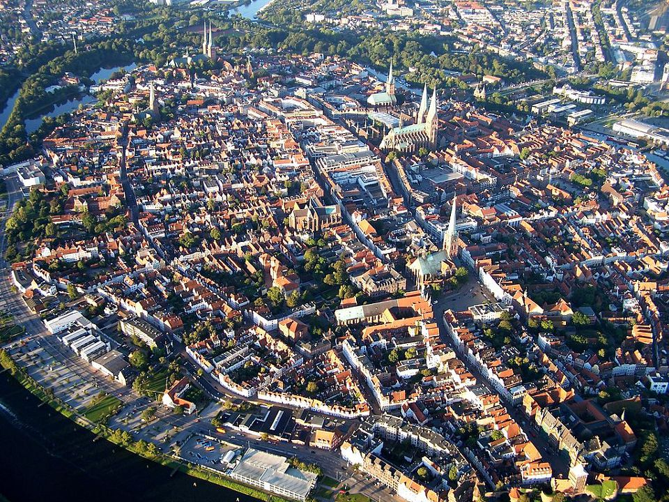
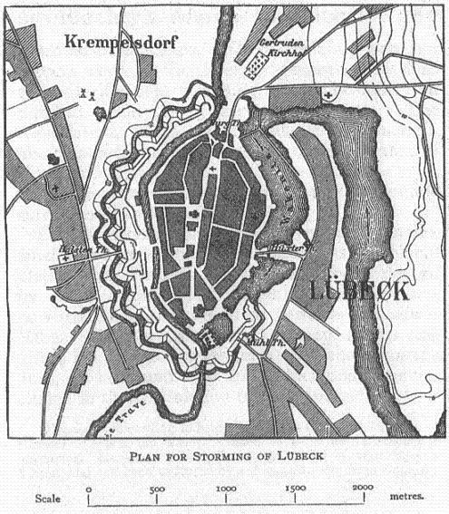
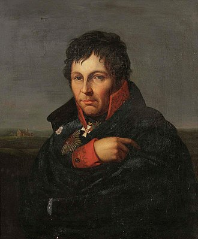
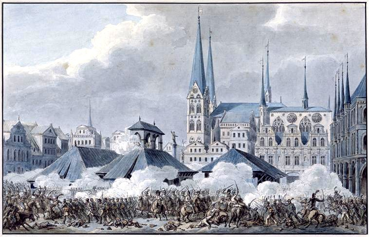

스톡홀름의 프랑스 왕 (7편) - "지극히 작은 자 하나에게 한 것"
게시: 2018-08-06T01:05:00+09:00
1806년 11월, 아우어슈테트 전투에서 다부를 돕지 않았다는 누명을 뒤집어 쓰고 욕을 먹어야 했던 베르나도트의 마음은 편치 않았습니다. 그러나 전시 상황이었고, 그야말로 거미새끼처럼 흩어져 도망치던 프로이센군을 추격하기 위해 베르나도트를 포함한 프랑스군은 승리를 만끽할 여유도 없이 강행군을 해야 했습니다. 베르나도트의 군단은 뮈라의 예비 기병대 및 술트의 군단과 함께 블뤼허(Gebhard Leberecht von Blücher) 장군이 지휘하는 프로이센군을 추격하고 있었지요.
프랑스군의 맹추격에 퇴로를 끊긴 블뤼허는 11월 5일, 과거 한자 동맹의 주요 항구 도시인 뤼벡(Lübeck)에 입성했습니다. 당시 뤼벡은 프로이센의 영토가 아닌 중립 도시였습니다. 따라서 프로이센의 패잔군 약 1만7천이 성 앞에 나타나자 입성을 허락하지 않으려 했습니다. 그러나 블뤼허는 막무가내로 성문을 열고 입성했습니다. 중립이고 나발이고 당장 갈 곳이 없었던 것이지요. 블뤼허는 절대 이 도시에서 프랑스군과 전투를 벌이지는 않겠다는 약속을 하며 도시 의회를 달랬습니다. 이는 사실 말이 안 되는 약속이었습니다. 이 도시에서 프로이센군이 순순히 항복을 할 생각이 아니라면 바닷가에 몰린 프로이센군이 도망칠 구석이 없었기 때문이었습니다. 그럼에도 블뤼허가 그런 약속을 한 것은 다 이유가 있어서였습니다. 뤼벡 시민들에게서 병사들을 먹일 대량의 술과 음식, 말 사료와 함께 병사들의 밀린 급료를 지불하기 위한 거액의 현금을 순순히 받아내려면 뭔가 약속을 해야 했던 것이지요. 아니나다를까, 당장 다음날 새벽 프랑스군이 뤼벡 앞에 나타나자 블뤼허는 이 도시의 성벽에 의지하여 결사 항전을 선언했습니다.

(오늘날의 뤼벡시 전경입니다. 덴마크 국경 인근에 있습니다.)

(당시 뤼벡 시의 지도입니다. 강과 성벽으로 둘러싸여 있어서, 공격하기가 용이한 곳은 아니었습니다.)
경악하는 사람들은 뤼벡 시민들 뿐만이 아니었습니다. 뤼벡 시내에는 1천8백의 스웨덴군도 있었던 것입니다. 제4차 대불동맹전쟁에서 전혀 존재감없는 동맹국이었던 스웨덴군은 당시 프로이센군과 함께 하노버 지방의 탈환을 위해 발트해 연안에 와 있었는데, 프로이센이 예나-아우어슈테트에서 믿어지지 않을 정도의 참패를 당하자 허겁지겁 스웨덴 본국으로 후퇴하던 중이었습니다. 원래 이들은 배편을 구해 스웨덴으로 돌아갈 생각으로 10월 31일 중립 도시 뤼벡으로 들어왔던 것인데, 바람 방향이 맞지 않아 출항을 못하고 있던 차였습니다. 그런 상황에서 생각지도 않게 프로이센군과 프랑스군이 중립을 무시하고 이 도시에서 치열한 전투를 벌이겠다고 하니 얼마나 황당했겠습니까 ?
뤼벡은 트라베(Trave)라는 강의 만곡부에 위치한 도시였고, 비록 낡았지만 과거에는 꽤 튼튼했던 성벽으로 보호된 도시라서 잘 하면 프랑스군의 공격으로부터 적어도 며칠, 어쩌면 몇 주 정도 버틸 수 있다고 블뤼허는 생각했습니다. 그러나 아침 6시부터 시작된 실제 전투의 결과는 그 기대를 완전히 벗어나는 것이었습니다. 튼튼하다고 믿었던 북문이 베르나도트의 강력한 공격을 버티지 못하고 오후 1시경 무너져 내린 것입니다. 전투가 장기화될 것이라고 믿고 사령부인 시내 여관에 머물고 있던 블뤼허는 갑자기 프랑스군이 시내까지 들이닥치자 깜짝 놀라 아들과 함께 간신히 몸을 빼 탈출했으나, 그와 함께 있던 샤른호스트(Gerhard von Scharnhorst) 등 참모진은 고스란히 프랑스군의 포로 신세가 되어야 할 정도로 베르나도트의 공격은 훌륭했습니다. 이 곳에서 대략 병력의 절반 정도만 건져서 도망쳤던 블뤼허도 갈 곳은 없었습니다. 결국 다음날 자존심 강한 블뤼허는 체면을 위해 "빵도 탄약도 다 떨어졌기 때문에 항복한다" 라는 문구를 항복 문서에 집어넣는 것으로 만족하고 베르나도트와 뮈라, 술트에게 항복해야 했습니다.

(제2차 세계대전 때 '북해의 괴물'로 재탄생하시게 되는 샤른호스트 장군입니다. 평민 출신으로서 승진과도 거리가 먼 사람이었으나, 나폴레옹에게 탈탈 털린 프로이센이 정신을 차리고 개혁을 하면서 빛을 보게 된 사람입니다. 그러니까 이때 포로가 되어 고생한 것도 나름 고맙게 생각해야 한다고 하면 좀 무리수겠지요.)

(뤼벡 시장으로 사용되던 광장에서 벌어진 혈투입니다. 뤼벡 시민들에게는 그야말로 날벼락이었을 것입니다.)
블뤼허는 그렇게 나름대로의 자존심을 세우고 항복하면 끝이었겠지만, 그의 고집 때문에 정작 불벼락을 맞아야 했던 것은 중립이었던 뤼벡 시민들이었습니다. 당시 전쟁의 불문률에 따르면 항복한 도시에 대해서는 약탈이 일체 허가되지 않았지만 공성전 끝에 성문을 깨뜨리고 탈취한 도시는 적어도 하루 정도는 병사들이 마음껏 약탈할 수 있었습니다. 뤼벡도 예외는 아니었습니다. 여기서 벌어진 약탈과 강간, 살해 사태의 직접적인 책임은 물론 프랑스군에게 있었지만, 블뤼허도 적어도 일부 책임은 져야 했습니다. 베르나도트를 비롯한 프랑스군 지휘관들은 뤼벡이 중립 도시이며, 프랑스군에게 저항한 것은 프로이센군일 뿐 뤼벡 시민들이 아니라는 것을 잘 알고 있었습니다. 따라서 나름대로는 미쳐 날뛰는 병사들을 제지하기 위해 노력은 했으나 별 소용이 없었습니다. 나중의 일이긴 하지만 맹장 우디노(Oudinot)도 그렇게 약탈에 광분한 병사들을 제지하다가 병사들에게 살해당할 뻔 한 일이 있었을 정도로, 그런 병사들을 말리는 것은 위험한 일이었습니다. 그런 이유로, 장교들도 그냥 적당히 말리는 척 했을 뿐이었습니다.
그런 상황 속에서 나름 신사인 척 하려 노력했던 베르나도트의 마음은 편치 않았을 것입니다. 그런 베르나도트에게 색다른 보고가 들어왔습니다. 포로로 잡힌 적군 중에 프로이센군 외에 스웨덴군이 있다는 것이었습니다. 스웨덴군 1천8백은 원치 않았던 전투에 그다지 적극적으로 나서지 않았는지 거의 전부가 그대로 항복해버렸던 것입니다. 그들 말고도 프로이센군도 약 4~5천 정도가 포로로 잡혔는데, 이들은 그다지 좋은 대우를 받지는 못했습니다. 나중에 나폴레옹은 프로이센군 포로들을 마치 선심쓰는 것처럼 스페인 국왕에게 보내며 '농삿일에 쓰시든 건설 현장에 쓰시든 마음대로 하시라'며 마치 노예처럼 취급할 정도였으니까요. 베르나도트는 그런 양심에 찔리는 살육의 현장에서 만난 이 운 나쁜 외국 군인들을 프로이센군처럼 모질게 대하고 싶은 마음은 들지 않았습니다. 그는 이들을 포로가 아니라 마치 조난 당한 선원들처럼 대해주었고, 특히 그 총지휘관인 뫼르너(Carl Carlsson Mörner) 장군을 비롯한 장교들에게는 상당히 친절하게 마치 손님처럼 대해주었습니다. 오쥬로(Augereau)와 란(Jean Lannes)의 부관으로 일했고 나중에 매우 뛰어난 회고록을 남긴 마르보(Jean Baptiste Antoine Marcellin de Marbot) 장군도 그 회고록에서 '베르나도트는 이 이방인들에게 자신이 가정 교육을 잘 받은 사람으로 보이도록 특별히 애를 썼다'라고 다소 비꼬는 투로 기술한 바 있습니다. 베르나도트가 그렇게 행동한 것은 뤼벡 전투의 상황이 그렇게 다소 양심에 찔리는 상황이었기 때문이지 이 처음 보는 스웨덴인들, 그것도 꾀죄죄한 포로들로부터 나중에 뭔가 대가를 바라고 한 것은 아니었습니다. 아마 베르나도트는 평생 두 번 다시 이 스웨덴 사람들을 다시 볼 일은 없을 것이라고 생각했을 것입니다.
그런데 처참한 전쟁 범죄가 벌어지던 뤼벡에서 이 별 뜻 없이 행한 작은 선의가 엄청난 결과를 가지고 되돌아옵니다.
-- To be continured
** 갑자기 여기서 마태복음 25장 35절 ~ 40절 부분이 생각나네요. 우리 모두 곤경에 처한 이웃에게 도움을 베풉시다.
(마 25:35) 내가 주릴 때에 너희가 먹을 것을 주었고 목마를 때에 마시게 하였고 나그네 되었을 때에 영접하였고
(마 25:36) 헐벗었을 때에 옷을 입혔고 병들었을 때에 돌보았고 옥에 갇혔을 때에 와서 보았느니라
(마 25:37) 이에 의인들이 대답하여 이르되 주여 우리가 어느 때에 주께서 주리신 것을 보고 음식을 대접하였으며 목마르신 것을 보고 마시게 하였나이까
(마 25:38) 어느 때에 나그네 되신 것을 보고 영접하였으며 헐벗으신 것을 보고 옷 입혔나이까
(마 25:39) 어느 때에 병드신 것이나 옥에 갇히신 것을 보고 가서 뵈었나이까 하리니
(마 25:40) 임금이 대답하여 이르시되 내가 진실로 너희에게 이르노니 너희가 여기 내 형제 중에 지극히 작은 자 하나에게 한 것이 곧 내게 한 것이니라 하시고
Source : The Life of Napoleon Bonaparte by William M. Sloane
https://en.wikipedia.org/wiki/Charles_XIV_John_of_Sweden
https://en.wikipedia.org/wiki/Battle_of_L%C3%BCbeck
https://en.wikipedia.org/wiki/Carl_Carlsson_M%C3%B6rner
https://en.wikipedia.org/wiki/Gebhard_Leberecht_von_Bl%C3%BCcher
http://kcm.co.kr/bible/kor/Mat25.html